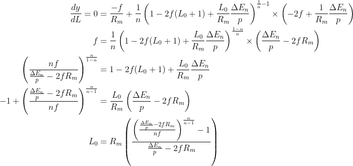

Leverage Ratio
Aug. 2021
For a landlord, both monthly cash flow and rate of equity buildup depended on the leverage gained with a mortgage (i.e. down payment) and inflation relative to this leverage. Later we will analyze how the timeframe of the mortgage before refinancing or sale also affects the rate of equity buildup.
The effective leverage ratio (L) for a property of value (V) is the ratio of loan size (V-E0) to the down payment plus closing costs and financing fees (E0+F). It is always a rational number greater than or equal to zero. For conveniance, we also define a proper fraction f based on closing fees and several other rearrangements.

The inflation-adjusted, monthly yield of a property is due to net income from rent after expenses (q), less the inflation-adjusted mortgage payment (p), and due to inflation-adjusted equity buildup (Σn) over a period of n months.
Both portions of the monthly yield depend strongly on the effective leverage ratio. In the past, the leverage ratio would be constrained by federal reserve requirements and other government policies. Today the effective leverage ratio is constrained by funding fees and quasi-federal/private policies/regulations. With a strong history of constraints but evolving loan standards, it is desirable to express the inflation-adjusted yield in terms of the leverage ratio.
From the previous articles in this series, the monthly mortgage payment (p) and loan principal (property price, V, minus down payment, E0) are related by a constant R(N) that is set by mortgage rates.
Rewriting the inflation-adjusted yield in these terms:
The marginal dividend model is based on a price point q×R(N) where every dollar paid down earns the monthly marginal dividend rate 1/R(N). However the sales prices could be at a premium or discount to this price point, represented by a scalar c. Using this premium allows to express the monthly cash flow ratio (q/p) in terms of the leverage ratio (i.e. down payment).
The optimum effective leverage ratio (L0) can be found based on the likely timeframe (n months) before selling or refinancing:
Finally, for sufficiently large n the optimum can be approximated. From the last article, if inflation equals interest rates, then n >> 2×f×Rm.

Considering typical values for Rm and f (Rm>200 and f<0.1) and a typical down payment of 20% (L ≈ 4), it is fairly safe to assume that the optimum leverage ratio is simply the lowest costs to close you are offered without significant additional fees.
To summarize, the yield equation combining both monthly cash flow and equity buildup is useful to express in terms of the leverage ratio and the optimum leverage ratio is the maximum permitted by lending standards and your own solvency. Next is determining how the time of ownership or refinancing affects the yield from building up equity.